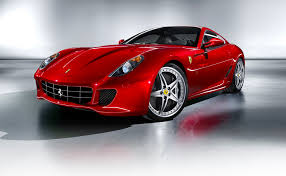
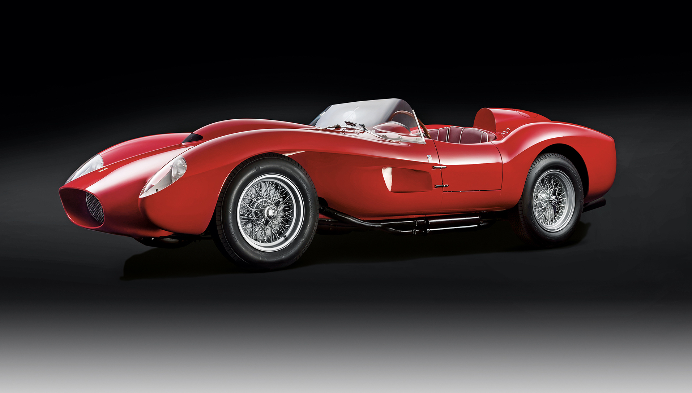

Эту знаменитую автомобильную марку основал человек, 20 лет проработавший на другие итальянские компании и остававшийся незамеченным до тех пор, пока не открыл свое собственное дело.
Энцо Феррари (Enzo Ferrari) родился в 1898 г. Работал на фирме Alfa Romeo: сначала был гонщиком заводской команды, затем специалистом по подготовке машин к состязаниям. Его группа, Scuderia Ferrari в 30-е гг. "тянула" на себе всю гоночную программу компании Alfa Romeo. Но еще до начала второй мировой войны Энцо Феррари решил идти своим путем.
Первая дорожная машина Энцо Феррари еще не называлась его именем. Автомобиль "815" с 1,5-литровой рядной "восьмеркой" изготовила компания Auto-Avio Costruzioni незадолго до начала второй мировой войны
В 1939 г. в городе Модена была зарегистрирована фирма Auto-Avio Costruzioni di Ferrari Enzo (Ауто-Авио Коструциони ди Феррари Энцо). Однако первая машина с фамилией Феррари в качестве марки и со знаменитым вздыбленным жеребцом в качестве эмблемы была построена на заводе в Маранелло, близ Модены, лишь в 1947 г. Сначала Феррари интересовался исключительно автоспортом, а дорожные автомобили строил и продавал лишь для получения средств для гоночной программы.
 